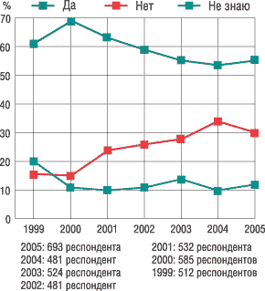
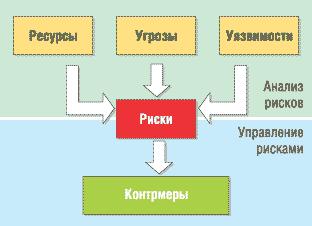
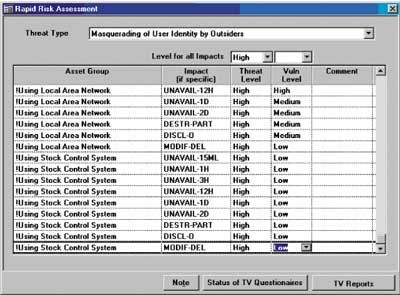
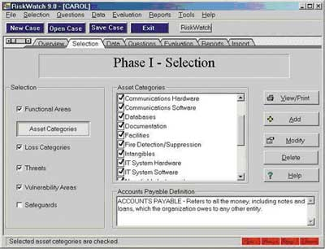
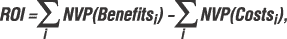
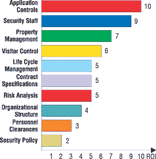
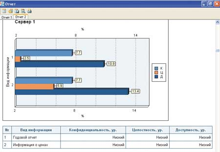

Необходимость инвестиций в информационную безопасность (ИБ) бизнеса не вызывает сомнений. Чтобы подтвердить актуальность задачи обеспечения безопасности бизнеса, воспользуемся отчетом ФБР, выпущенным по материалам опроса американских компаний (средний и крупный бизнес). Статистика инцидентов в области ИТ-секьюрити неумолима. Согласно данным ФБР, в нынешнем году 56% опрошенных компаний подвергались атаке (рис. 1).
|  | Рис. 1. Статистика инцидентов в области информационной безопасности. Источник: CSI/FBI 2005 Computer Crime and Security Survey.
|
Но как оценить уровень вложений в ИБ, который обеспечит максимальную эффективность вложенных средств? Для решения этой задачи существует только один способ - применять системы анализа рисков, позволяющие оценить существующие в системе риски и выбрать оптимальный по эффективности вариант защиты (по соотношению существующих в системе рисков к затратам на ИБ).
Обоснование инвестиций
По статистике, самые серьезные препятствия на пути принятия каких-либо мер для обеспечения информационной безопасности в компании связаны с двумя причинами: ограничение бюджета и отсутствие поддержки со стороны руководства.
Обе эти причины возникают из-за непонимания руководством серьезности вопроса и неспособности ИТ-менеджера обосновать, зачем вкладывать деньги в информационную безопасность. Часто считается, что основная проблема заключается в том, что ИТ-менеджеры и руководители разговаривают на разных языках - техническом и финансовом, но ведь и самим ИТ-специалистам часто трудно оценить, на что потратить деньги и сколько их требуется для улучшения защищенности системы компании, чтобы эти расходы не оказались напрасными или чрезмерными.
Если ИТ-менеджер четко представляет себе, сколько денег компания может потерять в случае реализации угроз, какие места в системе наиболее уязвимы, какие меры можно принять для повышения уровня защищенности, не потратив при этом лишних денег, и все это подтверждено документально, то решение его задачи - убедить руководство обратить внимание и выделить средства на обеспечение ИБ - становится значительно более реальным.
Для решения такого рода задач разработаны специальные методы и построенные на их базе программные комплексы анализа и контроля информационных рисков. Мы рассмотрим систему CRAMM британской компании Insight Consulting (http://www.insight.co.uk), американскую RiskWatch одноименной компании (http://www.riskwatch.com) и российский пакет ГРИФ компании Digital Security (http://www.dsec.ru). Их сравнительные характеристики приведены в таблице.
Сравнительный анализ инструментальных средств анализа рисков
| Критерии сравнения | CRAMM | RiskWatch | ГРИФ 2005 Digital Security Office |
| Поддержка | Обеспечивается | Обеспечивается | Обеспечивается |
| Легкость работы для пользователя | Требует специальной подготовки и высокой квалификации аудитора | Требует специальной подготовки и высокой квалификации аудитора | Интерфейс ориентирован на ИТ-менеджеров и руководителей; не требует специальных знаний в области ИБ |
| Стоимость лицензии за одно рабочее место, долл. | От 2000 до 5000 | От 10 000 | От 1000 |
| Системные требования |
ОС Windows 98/Me/NT/2000/XP Минимальные требования: Рекомендуемые требования: |
ОС Windows 2000/XP Свободное дисковое пространство для инсталляции 30 Мбайт Процессор Intel Pentium или совместимый, 256 Мбайт памяти |
ОС Windows 2000/XP Минимальные требования: Рекомендуемые требования: |
| Функциональность |
Входные данные:
Варианты отчетов:
|
Входные данные:
Варианты отчетов:
|
Входные данные:
Состав отчета:
|
| Количественный/качественный метод | Качественная оценка | Количественная оценка | Качественная и количественная оценки |
| Сетевое решение | Отсутствует | Отсутствует | Корпоративная версия Digital Security Office 2005 |
CRAMM
Метод CRAMM (CCTA Risk Analysis and Management Method) был разработан Агентством по компьютерам и телекоммуникациям Великобритании (Central Computer and Telecommunications Agency) по заданию британского правительства и взят на вооружение в качестве государственного стандарта. Начиная с 1985 г. он используется правительственными и коммерческими организациями Великобритании. За это время CRAMM приобрел популярность во всем мире. Фирма Insight Consulting занимается разработкой и сопровождением программного продукта, реализующего метод CRAMM.
Метод CRAMM (http://www.cramm.com) не случайно выбран нами для более детального рассмотрения. В настоящее время CRAMM - это довольно мощный и универсальный инструмент, позволяющий, помимо анализа рисков, решать ряд других аудиторских задач, включая:
- обследование ИС и выпуск сопроводительной документации на всех этапах его проведения;
- аудит в соответствии с требованиями британского правительства, а также стандарта BS 7799:1995 Code of Practice for Information Security Management;
- разработку политики безопасности и плана обеспечения непрерывности бизнеса.
В основе метода CRAMM лежит комплексный подход к оценке рисков, сочетающий количественные и качественные методы анализа. Метод универсален и подходит и для больших, и для малых организаций как правительственного, так и коммерческого сектора. Версии ПО CRAMM, ориентированные на разные типы организаций, отличаются друг от друга базами знаний (profiles): для коммерческих организаций имеется Commercial Profile, для правительственных - Government profile. Правительственный вариант профиля также позволяет проводить аудит на соответствие требованиям американского стандарта ITSEC ("Оранжевая книга"). Концептуальная схема проведения обследования по методу CRAMM показана на рис. 2.
|  | Рис. 2. Схема проведения обследования по методу CRAMM.
|
При грамотном использовании метода CRAMM удается получать очень хорошие результаты, из которых, пожалуй, наиболее важный - возможность экономического обоснования расходов организации на обеспечение ИБ и непрерывности бизнеса. Экономически обоснованная стратегия управления рисками позволяет в конечном счете сохранить средства, избегая неоправданных расходов.
CRAMM предполагает разделение всей процедуры на три последовательных этапа. Задача первого этапа состоит в ответе на вопрос: "Достаточно ли для защиты системы применения средств базового уровня, реализующих традиционные функции безопасности, или необходимо проведение более детального анализа?" На втором этапе проводится идентификация рисков и оценивается их величина. На третьем этапе решается вопрос о выборе адекватных контрмер.
Методика CRAMM для каждого этапа определяет набор исходных данных, последовательность мероприятий, анкеты для проведения интервью, списки проверки и набор отчетных документов.
На первой стадии исследования выполняется идентификация и определение ценности защищаемых ресурсов. Оценка проводится по десятибалльной шкале, причем критериев оценки может быть несколько - финансовые потери, ущерб репутации и т. д. В описаниях CRAMM в качестве примера приводится такая шкала оценки по критерию "Финансовые потери, связанные с восстановлением ресурсов":
- 2 балла - менее 1000 долл.;
- 6 баллов - от 1000 до 10 000 долл.;
- 8 баллов - от 10 000 до 100 000 долл.;
- 10 баллов - свыше 100 000 долл.
При низкой оценке по всем используемым критериям (3 балла и ниже) считается, что для рассматриваемой системы достаточно базового уровня защиты (для этого уровня не требуется подробной оценки угроз ИБ), и вторая стадия исследования пропускается.
На второй стадии идентифицируются и оцениваются угрозы в сфере ИБ, проводится поиск и оценка уязвимостей защищаемой системы. Уровень угроз оценивается по следующей шкале: очень высокий, высокий, средний, низкий, очень низкий. Уровень уязвимости оценивается как высокий, средний или низкий. На основе этой информации вычисляется оценка уровня риска по семибалльной шкале (рис. 3).
|  |
| Рис. 3. Вторая стадия исследования по методу CRAMM - оценка уровня риска.
|
На третьей стадии CRAMM генерирует варианты мер противодействия выявленным рискам. Продукт предлагает рекомендации следующих типов:
- рекомендации общего характера;
- конкретные рекомендации;
- примеры того, как можно организовать защиту в данной ситуации.
CRAMM имеет обширную базу, в которой содержатся описания около 1000 примеров реализации подсистем защиты различных компьютерных систем. Эти описания можно использовать в качестве шаблонов.
Решение о внедрении в систему новых механизмов безопасности и модификации старых принимает руководство организации, учитывая связанные с этим расходы, их приемлемость и конечную выгоду для бизнеса. Задача аудитора состоит в том, чтобы обосновать рекомендуемые меры для руководства организации.
Если принято решение о внедрении новых контрмер и модификации старых, на аудитора может быть возложена задача подготовки плана внедрения и оценки эффективности использования этих мер. Решение этих задач выходит за рамки метода CRAMM.
К недостаткам метода CRAMM можно отнести следующие:
- метод требует специальной подготовки и высокой квалификации аудитора;
- аудит по методу CRAMM - процесс достаточно трудоемкий и может потребовать месяцев непрерывной работы аудитора;
- CRAMM в гораздо большей степени подходит для аудита уже существующих ИС, запущенных в эксплуатацию, нежели для ИС, находящихся на стадии разработки;
- программный инструментарий CRAMM генерирует большое количество бумажной документации, которая не всегда оказывается полезной на практике;
- CRAMM не позволяет создавать собственные шаблоны отчетов или модифицировать имеющиеся;
- возможность внесения дополнений в базу знаний CRAMM недоступна пользователям, что вызывает определенные трудности при адаптации этого метода к потребностям конкретной организации;
- ПО CRAMM не локализовано, существует только на английском языке;
- высокая стоимость лицензии - от 2000 до 5000 долл.
RiskWatch
ПО RiskWatch - это мощное средство анализа и управления рисками. В семейство RiskWatch входят программные продукты для проведения различных видов аудита безопасности. Оно включает в себя следующие средства аудита и анализа рисков:
- RiskWatch for Physical Security - для физических методов защиты ИС;
- RiskWatch for Information Systems - для информационных рисков;
- HIPAA-WATCH for Healthcare Industry - для оценки соответствия требованиям стандарта HIPAA (US Healthcare Insurance Portability and Accountability Act);
- RiskWatch RW17799 for ISO 17799 - для оценки соответствия требованиям стандарта ISO 17799.
В методе RiskWatch в качестве критериев для оценки и управления рисками используются предсказание годовых потерь (Annual Loss Expectancy, ALE) и оценка возврата от инвестиций (Return on Investment, ROI).
Семейство программных продуктов RiskWatch имеет массу достоинств. RiskWatch помогает провести анализ рисков и сделать обоснованный выбор мер и средств защиты. В отличие от CRAMM, программа RiskWatch более ориентирована на точную количественную оценку соотношения потерь от угроз безопасности и затрат на создание системы защиты. Следует также отметить, что в этом продукте риски в сфере информационной и физической безопасности компьютерной сети предприятия рассматриваются совместно.
В основе продукта RiskWatch лежит методика анализа рисков, в которой можно выделить четыре этапа.
Первый этап - определение предмета исследования. Здесь описываются такие параметры, как тип организации, состав исследуемой системы (в общих чертах), базовые требования в области безопасности. Для облегчения работы аналитика в шаблонах, соответствующих типу организации ("коммерческая информационная система", "государственная/военная информационная система" и т. д.), есть списки категорий защищаемых ресурсов, потерь, угроз, уязвимостей и мер защиты. Из них нужно выбрать те, что реально присутствуют в организации.
Например, для потерь предусмотрены такие категории:
- задержки и отказ в обслуживании;
- раскрытие информации;
- прямые потери (например, от уничтожения оборудования огнем);
- жизнь и здоровье (персонала, заказчиков и т. д.);
- изменение данных;
- косвенные потери (например, затраты на восстановление);
- репутация.
Определение категорий защищаемых ресурсов в пакете RiskWatch иллюстрирует рис. 4.
|  |
| Рис. 4. Определение категорий защищаемых ресурсов в пакете RiskWatch.
|
Второй этап - ввод данных, описывающих конкретные характеристики системы. Они могут вводиться вручную или импортироваться из отчетов, созданных инструментальными средствами исследования уязвимости компьютерных сетей.
На этом этапе подробно описываются ресурсы, потери и классы инцидентов. Классы инцидентов получаются путем сопоставления категории потерь и категории ресурсов.
Для выявления возможных уязвимостей используется опросник, база которого содержит более 600 вопросов. Вопросы связаны с категориями ресурсов. Задается частота возникновения каждой из выделенных угроз, степень уязвимости и ценность ресурсов. Все это используется в дальнейшем для расчета эффекта от внедрения средств защиты.
Третий и, наверное, самый важный этап - количественная оценка. На этом этапе рассчитывается профиль рисков и выбираются меры обеспечения безопасности. Сначала устанавливаются связи между ресурсами, потерями, угрозами и уязвимостями, выделенными на предыдущих шагах исследования (риск описывается совокупностью этих четырех параметров).
Фактически риск оценивается с помощью математического ожидания потерь за год. Например, если стоимость сервера - 150 тыс. долл., а вероятность того, что он будет уничтожен пожаром в течение года, равна 0,01, то ожидаемые потери составят 1500 долл.
Общеизвестная формула m=p х v, где m - математическое ожидание, p - вероятность возникновения угрозы, v - стоимость ресурса, претерпела некоторые изменения в связи с тем, что RiskWatch использует определенные американским Институтом стандартов NIST оценки, называемые LAFE и SAFE. LAFE (Local Annual Frequency Estimate) показывает, сколько раз в год в среднем данная угроза реализуется в данном месте (например, в городе). SAFE (Standard Annual Frequency Estimate) показывает, сколько раз в год в среднем данная угроза реализуется в этой "части мира" (например, в Северной Америке). Вводится также поправочный коэффициент, который позволяет учесть, что при реализации угрозы защищаемый ресурс может быть уничтожен не полностью, а лишь частично.
Дополнительно рассматриваются сценарии "что, если...", которые позволяют описать аналогичные ситуации при условии внедрения средств защиты. Сравнивая ожидаемые потери при условии внедрения защитных мер и без них, можно оценить эффект от таких мероприятий.
RiskWatch включает в себя базы с оценками LAFE и SAFE, а также с обобщенным описанием различных типов средств защиты.
Эффект от внедрения средств защиты количественно описывается с помощью показателя ROI (Return on Investment - отдача от инвестиций), который показывает отдачу от сделанных инвестиций за определенный период времени. Рассчитывается этот показатель по формуле:

где Costsi - затраты на внедрение и поддержание i-той меры защиты; Benefitsi - оценка той пользы (ожидаемого снижения потерь), которую приносит внедрение данной меры защиты; NVP (Net Value Present) дает поправку на инфляцию.
Четвертый этап - генерация отчетов. Возможны следующие типы отчетов:
- краткие итоги;
- полные и краткие отчеты об элементах, описанных на стадиях 1 и 2;
- отчет о стоимости защищаемых ресурсов и ожидаемых потерях от реализации угроз;
- отчет об угрозах и мерах противодействия;
- отчет о ROI;
- отчет о результатах аудита безопасности.
Пример расчета показателя ROI для различных мер защиты приведен на рис. 5.
|  | Рис. 5. Показатель ROI для различных мер защиты, рассчитанный при помощи RiskWatch.
|
Таким образом, RiskWatch позволяет оценить не только риски, которые сейчас существуют на предприятии, но и ту выгоду, которую может принести внедрение физических, технических, программных и прочих средств и механизмов защиты. Подготовленные отчеты и графики дают материал, достаточный для принятия решений об изменении системы обеспечения безопасности предприятия.
Для отечественных пользователей проблема заключается в том, что получить используемые в RiskWatch оценки (такие, как LAFE и SAFE) для наших условий достаточно проблематично. Хотя сама методология может с успехом применяться и у нас.
Подводя итог, отметим, что, выбирая конкретную методику анализа рисков на предприятии и поддерживающие ее инструментальные средства, следует ответить на вопрос: нужна ли точная количественная оценка последствий реализации угроз или достаточно оценки на качественном уровне. Необходимо также учитывать следующие факторы: наличие экспертов, способных дать достоверные оценки объема потерь от угроз информационной безопасности, и наличие на предприятии достоверной статистики инцидентов в сфере информационной безопасности.
К недостаткам RiskWatch можно отнести следующее:
- данный метод подходит, если требуется провести анализ рисков на программно-техническом уровне защиты, без учета организационных и административных факторов;
- полученные оценки рисков (математическое ожидание потерь) далеко не исчерпывают понимание риска с системных позиций - метод не учитывает комплексный подход к информационной безопасности;
- ПО RiskWatch существует только на английском языке;
- высокая стоимость лицензии - от 10 000 долл. за одно рабочее место для небольшой компании.
ГРИФ
ГРИФ - это комплексная система анализа и управления рисками информационной системы компании. ГРИФ 2005 из состава Digital Security Office (http://www.dsec.ru/products/grif/) дает картину защищенности информационных ресурсов в системе и позволяет выбрать оптимальную стратегию защиты корпоративной информации.
Система ГРИФ анализирует уровень защищенности ресурсов, оценивает возможный ущерб от реализации угроз ИБ и помогает управлять рисками, выбирая контрмеры.
Анализ рисков ИС проводится двумя способами: при помощи модели информационных потоков или модели угроз и уязвимостей, в зависимости от того, какими исходными данными располагает пользователь, а также от того, какие данные его интересуют на выходе.
Модель информационных потоков
При работе с моделью информационных потоков в систему вносится полная информация обо всех ресурсах с ценной информацией, пользователях, имеющих доступ к этим ресурсам, видах и правах доступа. Заносятся данные обо всех средствах защиты каждого ресурса, сетевые взаимосвязи ресурсов, характеристики политики безопасности компании. В результате получается полная модель информационной системы.
На первом этапе работы с программой пользователь вносит все объекты своей информационной системы: отделы, ресурсы (к специфичным объектам данной модели относятся сетевые группы, сетевые устройства, виды информации, группы пользователей, бизнес-процессы).
Далее пользователю необходимо проставить связи, т. е. определить, к каким отделам и сетевым группам относятся ресурсы, какая информация хранится на ресурсе и какие группы пользователей имеют к ней доступ. Пользователь также указывает средства защиты ресурса и информации.
На завершающем этапе пользователь отвечает на список вопросов по политике безопасности, реализованной в системе, что позволяет оценить реальный уровень защищенности системы и детализировать оценки рисков.
Наличие средств информационной защиты, отмеченных на первом этапе, само по себе еще не делает систему защищенной в случае их неадекватного использования и отсутствия комплексной политики безопасности, учитывающей все аспекты защиты информации, включая вопросы организации защиты, физической безопасности, безопасности персонала, непрерывности ведения бизнеса и т. д.
В результате выполнения всех действий на данных этапах на выходе формируется полная модель информационной системы с точки зрения информационной безопасности с учетом реального выполнения требований комплексной политики безопасности, что позволяет перейти к программному анализу введенных данных для получения комплексной оценки рисков и формирования итогового отчета.
Модель угроз и уязвимостей
Работа с моделью анализа угроз и уязвимостей подразумевает определение уязвимостей каждого ресурса с ценной информацией и соответствующих угроз, которые могут быть реализованы через данные уязвимости. В результате получается полная картина слабых мест в информационной системе и того ущерба, который может быть нанесен.
На первом этапе работы с продуктом пользователь вносит в систему объекты своей ИС: отделы, ресурсы (к специфичным объектам для данной модели относятся угрозы информационной системе и уязвимости, через которые реализуются угрозы).
Система ГРИФ 2005 включает обширные встроенные каталоги угроз и уязвимостей, в которых содержится около 100 угроз и 200 уязвимостей. Для максимальной полноты и универсальности данных каталогов эксперты Digital Security разработали специальную классификацию угроз DSECCT, в которой реализован многолетний практический опыт в области информационной безопасности. Используя эти каталоги, пользователь может выбрать угрозы и уязвимости, относящиеся к его информационной системе.
Далее пользователю необходимо проставить связи, т. е. определить, к каким отделам относятся ресурсы, какие угрозы действуют на ресурс и через какие уязвимости они реализуются.
Алгоритм системы ГРИФ 2005 анализирует построенную модель и генерирует отчет, который содержит значения риска для каждого ресурса. Конфигурация отчета может быть практически любой, что позволяет создавать как краткие отчеты для руководства, так и детальные отчеты для дальнейшей работы с результатами (рис. 6).
|  |
| Рис. 6. Пример отчета в системе ГРИФ 2005.
|
Система ГРИФ 2005 содержит модуль управления рисками, который позволяет проанализировать все причины того, что после обработки алгоритмом занесенных данных получается именно такое значение риска. Таким образом, зная причины, можно получить данные, необходимые для реализации контрмер и, соответственно, снижения уровня риска. Рассчитав эффективность каждой возможной контрмеры, а также определив значение остаточного риска, можно выбрать контрмеры, которые позволят снизить риск до необходимого уровня.
В результате работы с системой ГРИФ строится подробный отчет об уровне риска каждого ценного ресурса информационной системы компании, указываются все причины риска с подробным анализом уязвимостей и оценкой экономической эффективности всех возможных контрмер.
***
Лучшие мировые практики и ведущие международные стандарты в области ИБ, в частности ISO 17799, требуют для эффективного управления безопасностью информационной системы внедрения системы анализа и управления рисками. При этом можно использовать любые удобные инструментальные средства, но главное - всегда четко понимать, что система информационной безопасности создана на основе анализа информационных рисков, проверена и обоснована. Анализ и управление информационными рисками - ключевой фактор для построения эффективной защиты информационной системы.